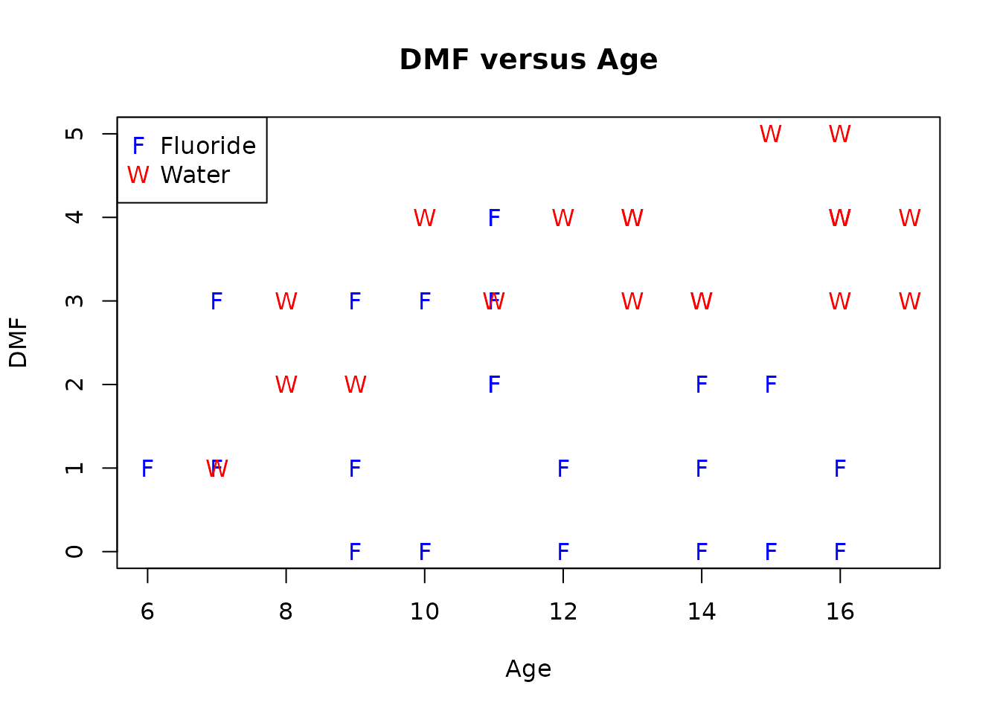
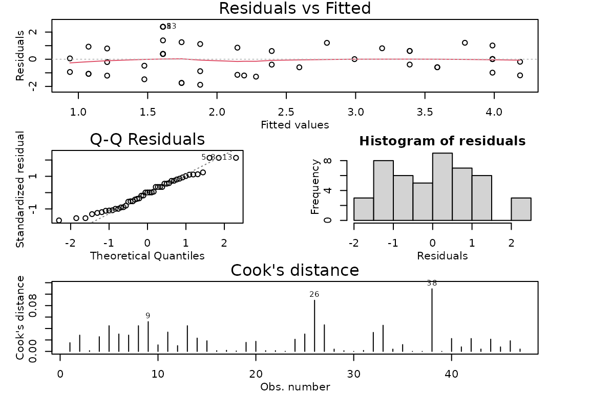
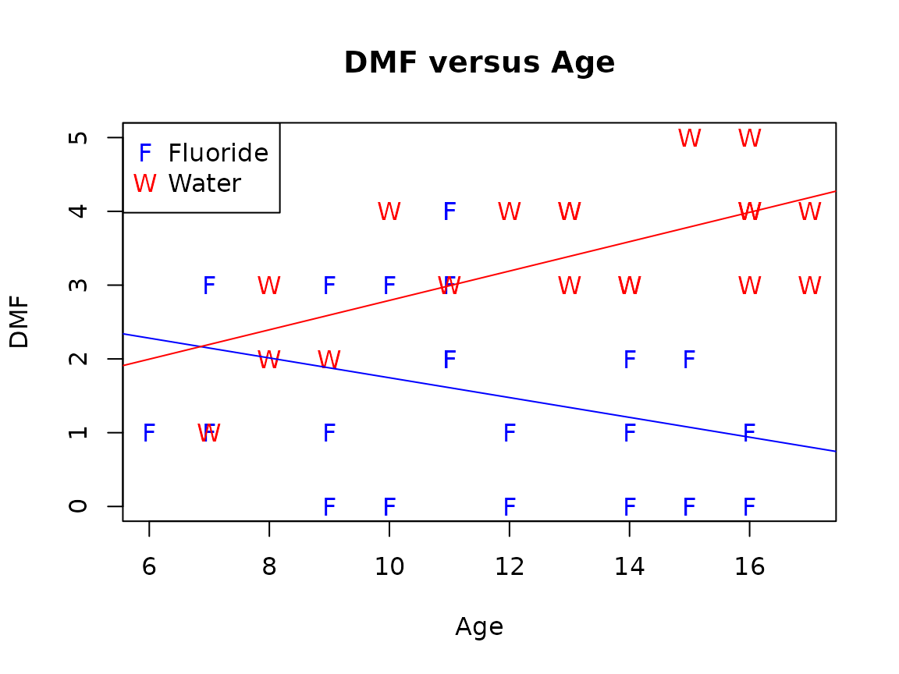

Case Study 8.3: STATS 201/8 Extra Case Study - Non-parallel Lines Model
Source:vignettes/articles/CS8_3.Rmd
CS8_3.RmdQuestion 1
In a two year randomised controlled trial into the effectiveness of various forms of fluoride on dental health, female children were randomly allocated to one of two groups: using a distilled water mouth rinse along with brushing their teeth (the placebo group) or using a mouth rinse where the distilled water had added acid-phosphate fluoride (which is tasteless). The children’s age at the start of the experiment was recorded, along with the change in the number of decayed, missing or filled teeth. 47 children completed the study.
The resulting data are in the file Dental.csv, which contains the variables:
| Variable | Description |
|---|---|
| DMF | The change in the number of decayed, missing or filled teeth over the duration of the experiment.(The higher the value, the worse the dental outcome.) We will model this as numeric (it is discrete ranging from 0-5). |
| Treatment | The allocated treatment: Water for water or Fluoride for acid-phosphate fluoride. |
| Age | The age of the children at the start of the experiment. |
We are interested in the effect of fluoride on dental outcomes. For this question we wish to see what effect, if any, there is when we also take into account the age of the children when they started treatment. In particular, does the effect of fluoride on the dental outcomes differ depending on the children's age?
Instructions:
- Comment on plot.
- Fit an appropriate model to the data. Check the model assumptions.
- Write appropriate Methods and Assumption Checks.
- Plot the data with your appropriate model superimposed over it.
- Can we conclude that treatment has no effect on DMF? If so, justify this with a relevant P-value. If not, briefly explain why not.
- Does the effect of the treatment on the average number of adverse dental outcomes depends on the age that the children started taking the fluoride treatment? Justify your answer with a relevant P-value.
- For children receiving the fluoride treatment, is there any evidence of an age effect? If so, write sentences, as if for an Executive Summary, quantifying the effects of a one year increase in age on DMF. If not, quote the P-value you used to come to this conclusion.
- For children receiving the water treatment, is there any evidence of an age effect? If so, write a sentence, as if for an Executive Summary, quantifying the effects of a one year increase in age on DMF. If not, quote the P-value you used to come to this conclusion.
Question of interest/goal of the study
Does the fluoride treatment seem to be decreasing the average number of adverse dental outcomes? How is the age of children related to the number of adverse dental treatments? In particular, does the effect of fluoride on the dental outcomes differ depending on the children's age?
inspect the data:
Dental.df = read.csv("Dental.csv", header = TRUE, stringsAsFactors = TRUE)
plot(DMF ~ Age,
data = Dental.df, pch = ifelse(Treatment == 'Fluoride', 'F', 'W'),
col = ifelse(Treatment == 'Fluoride', 'blue', 'red'), main = "DMF versus Age"
)
legend("topleft", pch = c("F", "W"), col = c('blue', 'red'), legend = c("Fluoride", "Water"))
Comment on plot
Looking at the data for the children treated with water, we see an increasing pattern with DMF and age, the higher the age at the start of the experiment, the larger the number of decayed, missing or filled teeth. Unusually, we seem to see the opposite pattern for the children given fluoride. There is also little difference between the groups when they are young, but looking at the children aged 14+, all the high numbers of DMF were for the water group and the low numbers for the fluoride group, so there is a distinct difference.
Fit an appropriate linear model and Check Assumptions
dental.fit1 = lm(DMF ~ Age * Treatment, data = Dental.df)
modelcheck(dental.fit1)
summary(dental.fit1)##
## Call:
## lm(formula = DMF ~ Age * Treatment, data = Dental.df)
##
## Residuals:
## Min 1Q Median 3Q Max
## -1.87871 -0.96313 0.01282 0.80073 2.38976
##
## Coefficients:
## Estimate Std. Error t value Pr(>|t|)
## (Intercept) 3.08682 0.95957 3.217 0.00246 **
## Age -0.13423 0.08188 -1.639 0.10843
## TreatmentWater -2.28436 1.44995 -1.575 0.12248
## Age:TreatmentWater 0.33328 0.11515 2.894 0.00595 **
## ---
## Signif. codes: 0 '***' 0.001 '**' 0.01 '*' 0.05 '.' 0.1 ' ' 1
##
## Residual standard error: 1.142 on 43 degrees of freedom
## Multiple R-squared: 0.4737, Adjusted R-squared: 0.437
## F-statistic: 12.9 on 3 and 43 DF, p-value: 3.809e-06
confint(dental.fit1)## 2.5 % 97.5 %
## (Intercept) 1.1516731 5.02197503
## Age -0.2993649 0.03089576
## TreatmentWater -5.2084664 0.63974412
## Age:TreatmentWater 0.1010541 0.56550506
# Rotate factor to get slope for treatment = Water
Dental.df = within(Dental.df, {
TreatmentR = factor(Treatment, levels = c("Water", "Fluoride"))
})
dental.fit2 = lm(DMF ~ Age * TreatmentR, data = Dental.df)
summary(dental.fit2)##
## Call:
## lm(formula = DMF ~ Age * TreatmentR, data = Dental.df)
##
## Residuals:
## Min 1Q Median 3Q Max
## -1.87871 -0.96313 0.01282 0.80073 2.38976
##
## Coefficients:
## Estimate Std. Error t value Pr(>|t|)
## (Intercept) 0.80246 1.08701 0.738 0.46439
## Age 0.19904 0.08096 2.458 0.01806 *
## TreatmentRFluoride 2.28436 1.44995 1.575 0.12248
## Age:TreatmentRFluoride -0.33328 0.11515 -2.894 0.00595 **
## ---
## Signif. codes: 0 '***' 0.001 '**' 0.01 '*' 0.05 '.' 0.1 ' ' 1
##
## Residual standard error: 1.142 on 43 degrees of freedom
## Multiple R-squared: 0.4737, Adjusted R-squared: 0.437
## F-statistic: 12.9 on 3 and 43 DF, p-value: 3.809e-06
confint(dental.fit2)## 2.5 % 97.5 %
## (Intercept) -1.38970091 2.9946268
## Age 0.03576409 0.3623259
## TreatmentRFluoride -0.63974412 5.2084664
## Age:TreatmentRFluoride -0.56550506 -0.1010541Plot the data with your appropriate model superimposed over it
plot(DMF ~ Age,
data = Dental.df, pch = ifelse(Treatment == 'Fluoride', 'F', 'W'),
col = ifelse(Treatment == 'Fluoride', 'blue', 'red'), main = "DMF versus Age"
)
legend("topleft", pch = c("F", "W"), col = c('blue', 'red'), legend = c("Fluoride", "Water"))
ests <- coef(dental.fit1)
abline(ests[1], ests[2], col = 'blue')
abline(ests[1] + ests[3], ests[2] + ests[4], col = 'red')
Method and Assumption Checks
We have two explanatory variables, one factor and one numeric, so have fitted a linear model to the data and checked for evidence of interaction between age and treatment. As there was evidence of interaction we have not been able to simplify the model.
The residual plot showed reasonably constant variability and no trend. Normality looks good (slightly short tails, but nothing too extreme) and no influential points were detected. Model assumptions are satisfied.
Our model is: where if the th child is in the Water treatment group and 0 if the child is in the Fluoride treatment group, and
Our model explained 47.4% of the variability in the data.
Can we conclude that treatment has no effect on DMF? If so, justify this with a relevant P-value. If not, briefly explain why not.
No, we cannot conclude this. Though the P-value for Treatment is large, the P-value for the interaction term is small, so we need treatment in combination with Age. There is a Treatment effect, but the size of the Treatment effect changes depending on Age.
Does the effect of the treatment on the average number of adverse dental outcomes depends on the age that the children started taking the treatment? Justify your answer with a relevant P-value.
We have evidence that any effect of the fluoride treatment on the average number of adverse dental outcomes depends on the age that the children started taking the treatment. This is because we have evidence of an interaction between the effects of age and treatment with a P-value of 0.006.
For children receiving the fluoride treatment, is there any evidence of an age effect? If so, write sentences, as if for an Executive Summary, quantifying the effects of a one year increase in age on DMF. If not, quote the P-value you used to come to this conclusion.
For the children given fluoride, we have no evidence that the average number of decayed, missing or filled teeth changes with age. (P-value for Age = 0.10843 when Treatment is Fluoride.)
For children receiving the water treatment, is there any evidence of an age effect? If so, write a sentence, as if for an Executive Summary, quantifying the effects of a one year increase in age on DMF. If not, quote the P-value you used to come to this conclusion.
We have evidence that for the children given water only, the average number of decayed, missing or filled teeth increases with age. (P-value for Age = 0.018 when Treatment is Water.)
We estimate that the number of decayed, missing or filled teeth increases by between 0.04 to 0.36 teeth per additional year of age, on average.